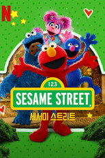
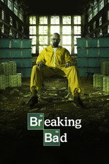
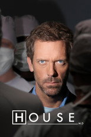
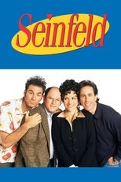
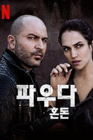
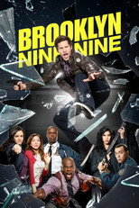
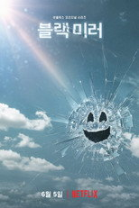
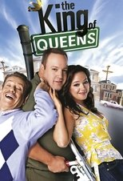
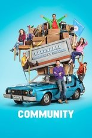

넷플릭스 드라마·시리즈603편 중 인기 60편
순서는 TMDB 인기도입니다 — 넷플릭스 외 서비스는 공식 순위를 공개하지 않습니다. 제공처는 JustWatch 자료(2026-09-21 확인)이며 가입 전 서비스에서 최종 확인하세요. 넷플릭스 요금·할인 →
1 스캔들시리즈 · 2026 · 드라마제공처 ↗2멘탈리스트 The Mentalist시리즈 · 2008 · 범죄 · 드라마제공처 ↗3
스캔들시리즈 · 2026 · 드라마제공처 ↗2멘탈리스트 The Mentalist시리즈 · 2008 · 범죄 · 드라마제공처 ↗3 로 앤 오더: 성범죄전담반 Law & Order: Special Victims Unit시리즈 · 1999 · 범죄 · 드라마 · 프라임비디오에도제공처 ↗4
로 앤 오더: 성범죄전담반 Law & Order: Special Victims Unit시리즈 · 1999 · 범죄 · 드라마 · 프라임비디오에도제공처 ↗4 루키 The Rookie시리즈 · 2018 · 범죄 · 드라마 · 웨이브, 왓챠, 티빙에도제공처 ↗7
루키 The Rookie시리즈 · 2018 · 범죄 · 드라마 · 웨이브, 왓챠, 티빙에도제공처 ↗7 본즈 Bones시리즈 · 2005 · 범죄 · 드라마 · 디즈니+에도제공처 ↗8
본즈 Bones시리즈 · 2005 · 범죄 · 드라마 · 디즈니+에도제공처 ↗8 시카고 PD Chicago P.D.시리즈 · 2014 · 범죄 · 드라마 · 프라임비디오에도제공처 ↗19괴물: 리지 보든 이야기 Monster: The Lizzie Borden Story시리즈 · 2026 · 드라마 · 범죄제공처 ↗20
시카고 PD Chicago P.D.시리즈 · 2014 · 범죄 · 드라마 · 프라임비디오에도제공처 ↗19괴물: 리지 보든 이야기 Monster: The Lizzie Borden Story시리즈 · 2026 · 드라마 · 범죄제공처 ↗20 스와트 S.W.A.T.시리즈 · 2017 · 범죄 · 액션 · 왓챠에도제공처 ↗21젠틀맨: 더 시리즈 The Gentlemen시리즈 · 2024 · 코미디 · 드라마넷플릭스 한국 최고 6위22
스와트 S.W.A.T.시리즈 · 2017 · 범죄 · 액션 · 왓챠에도제공처 ↗21젠틀맨: 더 시리즈 The Gentlemen시리즈 · 2024 · 코미디 · 드라마넷플릭스 한국 최고 6위22 워킹 데드 The Walking Dead시리즈 · 2010 · 액션 · 모험 · 디즈니+에도제공처 ↗23
워킹 데드 The Walking Dead시리즈 · 2010 · 액션 · 모험 · 디즈니+에도제공처 ↗23 기묘한 이야기 Stranger Things시리즈 · 2016 · 액션 · 모험제공처 ↗26
기묘한 이야기 Stranger Things시리즈 · 2016 · 액션 · 모험제공처 ↗26 슈츠 Suits시리즈 · 2011 · 드라마 · 프라임비디오에도제공처 ↗27굿 닥터 The Good Doctor시리즈 · 2017 · 드라마제공처 ↗28
슈츠 Suits시리즈 · 2011 · 드라마 · 프라임비디오에도제공처 ↗27굿 닥터 The Good Doctor시리즈 · 2017 · 드라마제공처 ↗28 씰 팀 SEAL Team시리즈 · 2017 · 액션 · 모험 · 왓챠에도제공처 ↗29바이킹스 Vikings시리즈 · 2013 · 액션 · 모험제공처 ↗30
씰 팀 SEAL Team시리즈 · 2017 · 액션 · 모험 · 왓챠에도제공처 ↗29바이킹스 Vikings시리즈 · 2013 · 액션 · 모험제공처 ↗30 영 셸던 Young Sheldon시리즈 · 2017 · 코미디 · 가족 · 프라임비디오에도제공처 ↗31루시퍼 Lucifer시리즈 · 2016 · 범죄 · SF/판타지제공처 ↗32
영 셸던 Young Sheldon시리즈 · 2017 · 코미디 · 가족 · 프라임비디오에도제공처 ↗31루시퍼 Lucifer시리즈 · 2016 · 범죄 · SF/판타지제공처 ↗32 홈랜드 Homeland시리즈 · 2011 · 드라마 · 전쟁 · 디즈니+에도제공처 ↗37아웃랜더 Outlander시리즈 · 2014 · 드라마 · SF/판타지제공처 ↗38
홈랜드 Homeland시리즈 · 2011 · 드라마 · 전쟁 · 디즈니+에도제공처 ↗37아웃랜더 Outlander시리즈 · 2014 · 드라마 · SF/판타지제공처 ↗38 히어로즈 Heroes시리즈 · 2006 · SF/판타지 · 드라마 · 왓챠에도제공처 ↗39스파르타쿠스 Spartacus시리즈 · 2010 · 드라마제공처 ↗40
히어로즈 Heroes시리즈 · 2006 · SF/판타지 · 드라마 · 왓챠에도제공처 ↗39스파르타쿠스 Spartacus시리즈 · 2010 · 드라마제공처 ↗40 오징어 게임 Squid Game시리즈 · 2021 · 액션 · 모험넷플릭스 한국 최고 1위44
오징어 게임 Squid Game시리즈 · 2021 · 액션 · 모험넷플릭스 한국 최고 1위44 가십걸 Gossip Girl시리즈 · 2007 · 드라마 · 프라임비디오에도제공처 ↗48
가십걸 Gossip Girl시리즈 · 2007 · 드라마 · 프라임비디오에도제공처 ↗48 위쳐 The Witcher시리즈 · 2019 · SF/판타지 · 드라마넷플릭스 한국 최고 6위49오렌지 이즈 더 뉴 블랙 Orange Is the New Black시리즈 · 2013 · 드라마 · 코미디제공처 ↗50
위쳐 The Witcher시리즈 · 2019 · SF/판타지 · 드라마넷플릭스 한국 최고 6위49오렌지 이즈 더 뉴 블랙 Orange Is the New Black시리즈 · 2013 · 드라마 · 코미디제공처 ↗50 더 크라운 The Crown시리즈 · 2016 · 드라마 · 티빙에도제공처 ↗5230 록 30 Rock시리즈 · 2006 · 코미디제공처 ↗53
더 크라운 The Crown시리즈 · 2016 · 드라마 · 티빙에도제공처 ↗5230 록 30 Rock시리즈 · 2006 · 코미디제공처 ↗53 너의 모든 것 You시리즈 · 2018 · 미스터리 · 범죄 · 왓챠에도제공처 ↗54애니멀 킹덤 Animal Kingdom시리즈 · 2016 · 범죄 · 드라마제공처 ↗55
너의 모든 것 You시리즈 · 2018 · 미스터리 · 범죄 · 왓챠에도제공처 ↗54애니멀 킹덤 Animal Kingdom시리즈 · 2016 · 범죄 · 드라마제공처 ↗55 오티스의 비밀 상담소 Sex Education시리즈 · 2019 · 코미디 · 드라마넷플릭스 한국 최고 6위56에버우드 Everwood시리즈 · 2002 · 드라마 · 가족제공처 ↗57
오티스의 비밀 상담소 Sex Education시리즈 · 2019 · 코미디 · 드라마넷플릭스 한국 최고 6위56에버우드 Everwood시리즈 · 2002 · 드라마 · 가족제공처 ↗57 더 레지던트 The Resident시리즈 · 2018 · 드라마 · 디즈니+에도제공처 ↗58
더 레지던트 The Resident시리즈 · 2018 · 드라마 · 디즈니+에도제공처 ↗58 웬즈데이 Wednesday시리즈 · 2022 · SF/판타지 · 미스터리넷플릭스 한국 최고 3위59하트랜드 Heartland시리즈 · 2007 · 가족 · 드라마제공처 ↗60뷰티 인 블랙 Beauty in Black시리즈 · 2024 · 드라마제공처 ↗
웬즈데이 Wednesday시리즈 · 2022 · SF/판타지 · 미스터리넷플릭스 한국 최고 3위59하트랜드 Heartland시리즈 · 2007 · 가족 · 드라마제공처 ↗60뷰티 인 블랙 Beauty in Black시리즈 · 2024 · 드라마제공처 ↗
스캔들시리즈 · 2026 · 드라마제공처 ↗2멘탈리스트 The Mentalist시리즈 · 2008 · 범죄 · 드라마제공처 ↗3로 앤 오더: 성범죄전담반 Law & Order: Special Victims Unit시리즈 · 1999 · 범죄 · 드라마 · 프라임비디오에도제공처 ↗4
세서미 스트리트 Sesame Street시리즈 · 1969 · 가족 · 코미디제공처 ↗5오피스 The Office시리즈 · 2005 · 코미디제공처 ↗6루키 The Rookie시리즈 · 2018 · 범죄 · 드라마 · 웨이브, 왓챠, 티빙에도제공처 ↗7본즈 Bones시리즈 · 2005 · 범죄 · 드라마 · 디즈니+에도제공처 ↗8
브레이킹 배드 Breaking Bad시리즈 · 2008 · 드라마 · 범죄제공처 ↗9뱀파이어 다이어리 The Vampire Diaries시리즈 · 2009 · 드라마 · SF/판타지제공처 ↗10
하우스 House시리즈 · 2004 · 드라마제공처 ↗11C.I.D सीआईडी시리즈 · 1998 · 액션 · 모험제공처 ↗12블랙리스트 The Blacklist시리즈 · 2013 · 드라마 · 범죄제공처 ↗13쉐임리스 Shameless시리즈 · 2011 · 드라마 · 코미디제공처 ↗14원 트리 힐 One Tree Hill시리즈 · 2003 · 드라마제공처 ↗15플래시 The Flash시리즈 · 2014 · 드라마 · SF/판타지제공처 ↗16하와이 파이브 오 Hawaii Five-0시리즈 · 2010 · 범죄 · 드라마제공처 ↗17프렌즈 Friends시리즈 · 1994 · 코미디제공처 ↗18시카고 PD Chicago P.D.시리즈 · 2014 · 범죄 · 드라마 · 프라임비디오에도제공처 ↗19괴물: 리지 보든 이야기 Monster: The Lizzie Borden Story시리즈 · 2026 · 드라마 · 범죄제공처 ↗20스와트 S.W.A.T.시리즈 · 2017 · 범죄 · 액션 · 왓챠에도제공처 ↗21젠틀맨: 더 시리즈 The Gentlemen시리즈 · 2024 · 코미디 · 드라마넷플릭스 한국 최고 6위22워킹 데드 The Walking Dead시리즈 · 2010 · 액션 · 모험 · 디즈니+에도제공처 ↗23
사인필드 Seinfeld시리즈 · 1989 · 코미디제공처 ↗24
파우다: 혼돈 פאודה시리즈 · 2015 · 드라마 · 액션제공처 ↗25기묘한 이야기 Stranger Things시리즈 · 2016 · 액션 · 모험제공처 ↗26슈츠 Suits시리즈 · 2011 · 드라마 · 프라임비디오에도제공처 ↗27굿 닥터 The Good Doctor시리즈 · 2017 · 드라마제공처 ↗28씰 팀 SEAL Team시리즈 · 2017 · 액션 · 모험 · 왓챠에도제공처 ↗29바이킹스 Vikings시리즈 · 2013 · 액션 · 모험제공처 ↗30영 셸던 Young Sheldon시리즈 · 2017 · 코미디 · 가족 · 프라임비디오에도제공처 ↗31루시퍼 Lucifer시리즈 · 2016 · 범죄 · SF/판타지제공처 ↗32
브루클린 나인-나인 Brooklyn Nine-Nine시리즈 · 2013 · 코미디 · 범죄제공처 ↗33베터 콜 사울 Better Call Saul시리즈 · 2015 · 범죄 · 드라마제공처 ↗34피키 블라인더스 Peaky Blinders시리즈 · 2013 · 드라마 · 범죄제공처 ↗35괴물: 에드 게인 이야기 Monster: The Ed Gein Story시리즈 · 2025 · 범죄 · 드라마제공처 ↗36홈랜드 Homeland시리즈 · 2011 · 드라마 · 전쟁 · 디즈니+에도제공처 ↗37아웃랜더 Outlander시리즈 · 2014 · 드라마 · SF/판타지제공처 ↗38히어로즈 Heroes시리즈 · 2006 · SF/판타지 · 드라마 · 왓챠에도제공처 ↗39스파르타쿠스 Spartacus시리즈 · 2010 · 드라마제공처 ↗40
블랙 미러 Black Mirror시리즈 · 2011 · SF/판타지 · 드라마제공처 ↗41더 초즌: 부름 받은 자 The Chosen시리즈 · 2019 · 액션 · 모험제공처 ↗42리버데일 Riverdale시리즈 · 2017 · 범죄 · 드라마제공처 ↗43오징어 게임 Squid Game시리즈 · 2021 · 액션 · 모험넷플릭스 한국 최고 1위44
킹 오브 퀸즈 The King of Queens시리즈 · 1998 · 코미디제공처 ↗45아바타: 아앙의 전설 Avatar: The Last Airbender시리즈 · 2024 · 액션 · 모험제공처 ↗46아우터뱅크스 Outer Banks시리즈 · 2020 · 액션 · 모험제공처 ↗47가십걸 Gossip Girl시리즈 · 2007 · 드라마 · 프라임비디오에도제공처 ↗48위쳐 The Witcher시리즈 · 2019 · SF/판타지 · 드라마넷플릭스 한국 최고 6위49오렌지 이즈 더 뉴 블랙 Orange Is the New Black시리즈 · 2013 · 드라마 · 코미디제공처 ↗50
커뮤니티 Community시리즈 · 2009 · 코미디제공처 ↗51더 크라운 The Crown시리즈 · 2016 · 드라마 · 티빙에도제공처 ↗5230 록 30 Rock시리즈 · 2006 · 코미디제공처 ↗53너의 모든 것 You시리즈 · 2018 · 미스터리 · 범죄 · 왓챠에도제공처 ↗54애니멀 킹덤 Animal Kingdom시리즈 · 2016 · 범죄 · 드라마제공처 ↗55오티스의 비밀 상담소 Sex Education시리즈 · 2019 · 코미디 · 드라마넷플릭스 한국 최고 6위56에버우드 Everwood시리즈 · 2002 · 드라마 · 가족제공처 ↗57더 레지던트 The Resident시리즈 · 2018 · 드라마 · 디즈니+에도제공처 ↗58웬즈데이 Wednesday시리즈 · 2022 · SF/판타지 · 미스터리넷플릭스 한국 최고 3위59하트랜드 Heartland시리즈 · 2007 · 가족 · 드라마제공처 ↗60뷰티 인 블랙 Beauty in Black시리즈 · 2024 · 드라마제공처 ↗